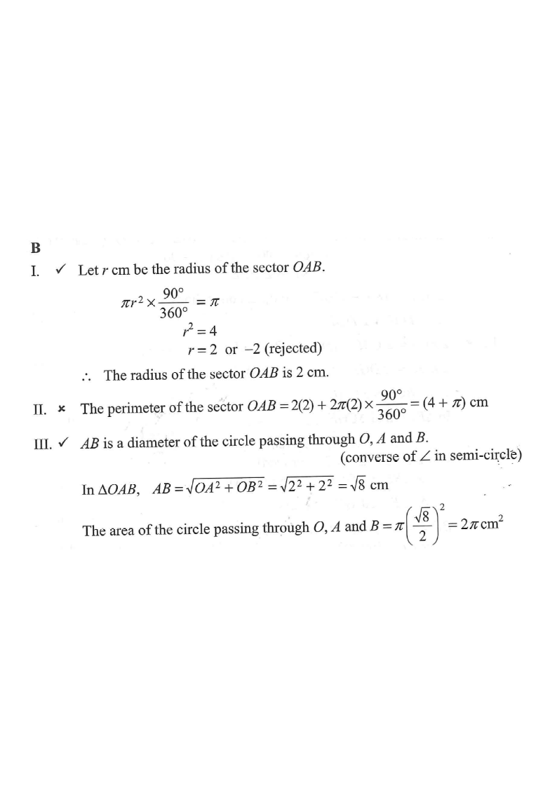

The area of the sector $OAB$ is $\pi\ \text{cm}^2$, where $O$ is the centre of the sector $OAB$. If $\angle AOB = 90^\circ$, which of the following are true?
I. The radius of the sector $OAB$ is $2$ cm.
II. The perimeter of the sector $OAB$ is $\pi$ cm.
III. The area of the circle passing through $O$, $A$ and $B$ is $2\pi\ \text{cm}^2$.

Let $r$ cm be the radius of the sector $OAB$. The sector angle is $90^\circ$, i.e. a quarter of a full circle.
$$\pi r^2 \times \frac{90^\circ}{360^\circ} = \pi$$
$$\frac{\pi r^2}{4} = \pi \;\Rightarrow\; r^2 = 4 \;\Rightarrow\; r = 2 \text{ or } -2 \text{ (rejected)}$$
So the radius of sector $OAB$ is $\boxed{2\text{ cm}}$ → I is TRUE ✔
The perimeter = two radii + the arc length:
$$2r + 2\pi r\times\frac{90^\circ}{360^\circ} = 2(2) + 2\pi(2)\left(\tfrac14\right) = 4 + \pi\ \text{cm}$$
This is $(4+\pi)$ cm, not $\pi$ cm. → II is FALSE ✘
Since $\angle AOB = 90^\circ$ (a right angle at $O$ subtending chord $AB$), the converse of the angle in a semicircle theorem gives:
$$AB \text{ is a diameter of the circle passing through } O, A \text{ and } B.$$
In $\triangle OAB$ (right-angled at $O$):
$$AB=\sqrt{OA^2+OB^2}=\sqrt{2^2+2^2}=\sqrt{8}\ \text{cm}$$
Diameter $AB=\sqrt8$, so the radius is $\dfrac{\sqrt8}{2}$, and
$$\text{Area}=\pi\left(\frac{\sqrt8}{2}\right)^2=\pi\cdot\frac{8}{4}=2\pi\ \text{cm}^2$$
→ III is TRUE ✔